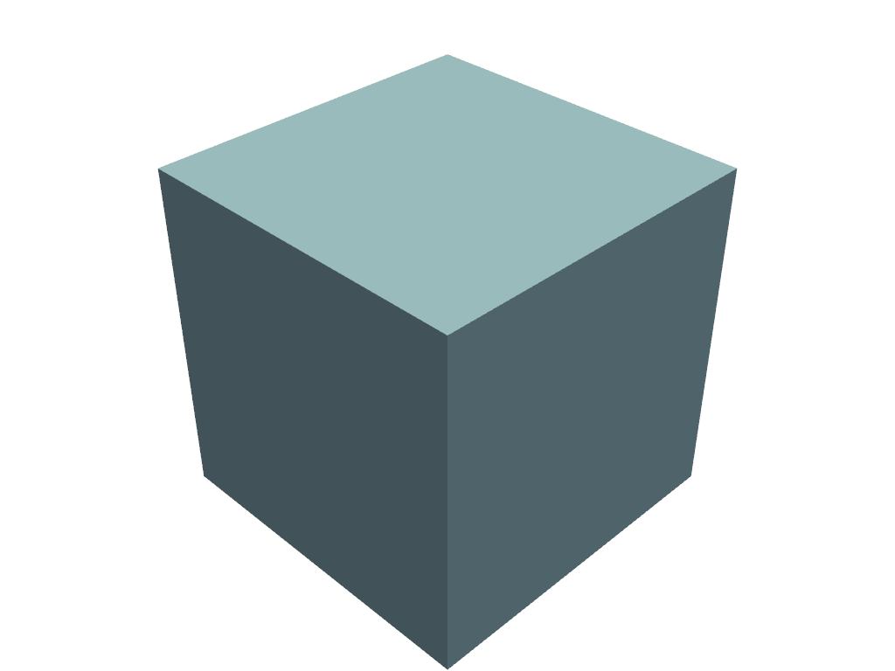

show#
- Plotter.show(title=None, window_size=None, interactive=True, auto_close=None, interactive_update=False, full_screen=None, screenshot=False, return_img=False, cpos=None, use_ipyvtk=None, jupyter_backend=None, return_viewer=False, return_cpos=None, **kwargs)[ソース]#
プロットウィンドウを表示します．
- パラメータ
- title
str,optional プロッティングウィンドウのタイトルです． デフォルトでは
pyvista.global_theme.titleとなります．- window_size
list,optional ピクセル単位のウィンドウサイズです． デフォルトは
pyvista.global_theme.window_sizeです．- interactivebool,
optional 初期設定では有効になっています．ユーザーが図をパンしたり動かしたりできるようにします． デフォルトでは
pyvista.global_theme.interactiveとなります．- auto_closebool,
optional interactiveが
Trueの場合，ユーザーがウィンドウを閉じたときに，プロットセッションを終了します． デフォルトではpyvista.global_theme.auto_closeとなります．- interactive_updatebool,
optional デフォルトでは無効になっています．ブロックしない描画を許可します．反復のたびに
BasePlotter.update()を呼び出す必要があります．- full_screenbool,
optional ウィンドウをフルスクリーンで開きます． 有効にすると，
window_sizeを無視します． デフォルトでは，pyvista.global_theme.full_screenとなります．- screenshot
str,pathlib.Path,BytesIOor bool,optional プロットの初期状態のスクリーンショットを取得します．文字列の場合は，スクリーンショットの保存先のパスを指定します．
Trueの場合，スクリーンショットは配列として返されます．デフォルトは`Falseです．インタラクティブなスクリーンショットの場合は，まずauto_close=Falseを指定してshow()を呼び出してシーンを設定し，次にそのスクリーンショットを別の呼び出しでshow()またはPlotter.screenshot()に保存することをお勧めします．- return_imgbool
最後のイメージとカメラ位置を表す数値配列を取得します．
- cpos
list(tuple(floats)) カメラの位置．
Plotter.camera_positionで設定することもできます．- use_ipyvtkbool,
optional 非推奨．代わりに，
pyvista.set_jupyter_backend('ipyvtklink')またはbackend='ipyvtklink'を使用してグローバルにバックエンドを設定します．- jupyter_backend
str,optional Jupyterノートブックが使用するバックエンドをプロットしています．次のいずれかです:
'none': ノートブックに表示しない．'pythreejs':pythreejsウィジェットを表示します．'static': 静的図形を表示します．'ipygany':ipyganyウィジェットを表示する'panel':panelウィジェットを表示します．
これは
pyvista.set_jupyter_backend()でグローバルに設定することもできます．- return_viewerbool,
optional jupyterlabビューア，シーン，または表示オブジェクトをjupyterノートブックでプロットする場合に取得します．
- return_cposbool,
optional 有効な場合，レンダリングウィンドウから最後のカメラ位置を返します． デフォルトはテーマの設定に基づいています．
pyvista.themes.DefaultTheme.return_cposを参照してください．- **kwargs
dict,optional 開発者キーワード引数．
- title
- 戻り値
- cpos
list カメラポジション，フォーカルポイント，ビューアップのリストです．
return_cpos=Trueまたはデフォルトのグローバルテーマやプロットテーマで設定されている場合にのみ返されます．return_viewer=Truejupyter notebookでreturn_cpos=Trueが設定されている場合には返されません．- image
np.ndarray return_img=Trueまたはscreenshot=Trueが設定されている場合に，最後に表示される画像のNumpy配列です．jupyter notebookの中でreturn_viewer=Trueが設定されている場合には返されません．オプションでアルファ値を含みます．サイズは[ウィンドウの高さxウィンドウの幅x3]テーマが
transparent_background=Falseに設定されている場合．[ウィンドウの高さxウィンドウの幅x4]テーマが
transparent_background=Trueに設定されている場合．
widgetreturn_viewer=True時のIPythonウィジェット．
- cpos
備考
GUIの終了ボタンが押されていると，一部のオペレーティングシステム(具体的にはWindows)でスクリーンショットの保存に問題が発生するため，
qキーを使用してプロッタを閉じてください．例
メッシュのプロットを表示します．
>>> import pyvista as pv >>> pl = pv.Plotter() >>> _ = pl.add_mesh(pv.Cube()) >>> pl.show()

スクリーンショットをインタラクティブに撮影します．スクリーンショットは最初に表示されるイメージのものであるため，最初の呼び出しで
auto_close=Falseを指定してシーンを設定してから，スクリーンショットを作成してください．>>> pl = pv.Plotter() >>> _ = pl.add_mesh(pv.Cube()) >>> pl.show(auto_close=False) >>> pl.show(screenshot='my_image.png')
Jupyterノートブック内に
pythreejsシーンを表示します>>> pl.show(jupyter_backend='pythreejs')
pythreejsシーンを取得します．>>> pl.show(jupyter_backend='pythreejs', return_viewer=True)
showを使用する際に，カメラの位置を取得します．>>> pl = pv.Plotter()
>>> _ = pl.add_mesh(pv.Sphere()) >>> pl.show(return_cpos=True) [(2.223005211686484, -0.3126909484828709, 2.4686209867735065), (0.0, 0.0, 0.0), (-0.6839951597283509, -0.47207319712073137, 0.5561452310578585)]